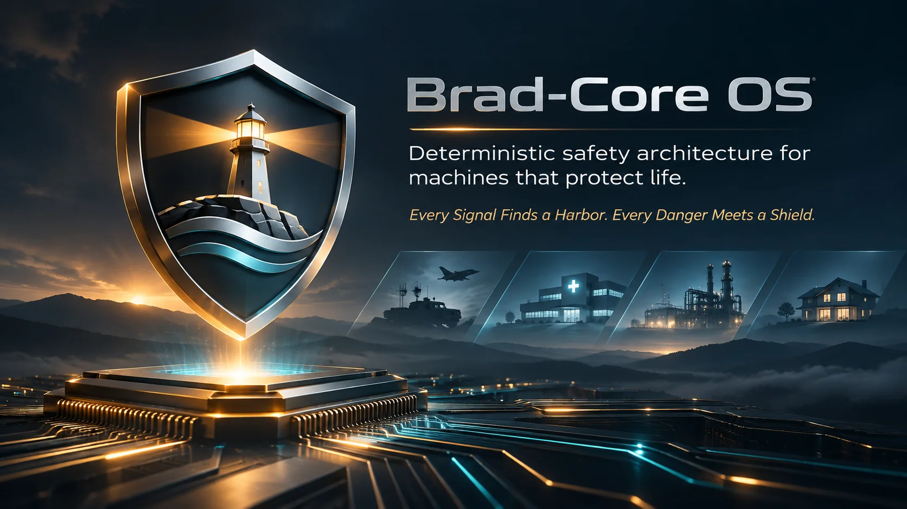

MISSION FIRST
Brad-Core OS
Independent safety architectures for the worlds we share.
MISSION FIRST
Brad-Core OS
Independent safety architectures for the worlds we share.
OUR PURPOSEThe mission is simple.
The mission is simple.
More tomorrows.
If technology can make decisions that affect human life, safety cannot be optional, invisible or controlled by the same system it must supervise.
ONE PLATFORM / MANY INDUSTRIESDifferent products.
Different products.
One protective philosophy.


EMMY’S PROMISE
“I don’t care if they know my name.
I care that they went home.”
Safety has a human purpose. Our engineering must earn its place in the world through evidence.
OUR ORIGIN ↗EVIDENCE / NOT JUST A RENDER
Testbeds remain open.
Explore the existing interactive digital twin, proving grounds, and documentation. Software results are distinguished from hardware-verification targets.
OPEN TESTBEDS & EVIDENCEPARTNERSHIPS / PHASE 1
Protect what matters next.
Brad-Core is seeking technical partners and $200,000 in Phase 1 funding for physical verification and operating continuity.
CONNECT WITH BRAD-CORE